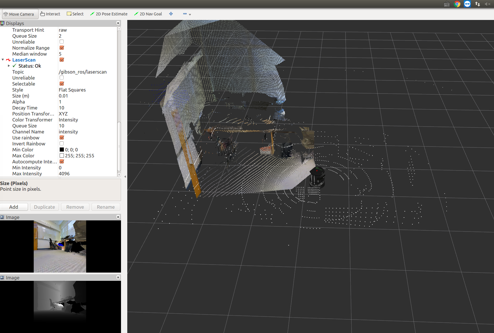

ROS Integration
Introduction
ROS is a set of well-engineered software libraries for building robotics applications. It includes a wide variety of packages, from low level drivers to efficient implementations of state of the art algorithms. As we strive to build intelligent agents and transfer them to real-world (on a real robot), we need to take advantage of ROS packages to complete the robot application pipeline.
There are three key applications of integrating iGibson with ROS.
Benchmark existing algorithms in a controlled realistic simulation environment. This allows for comparing learning-based methods with classical methods in simulation environments.
Comparing robots in simulation with robots in the real world. In simulation, iGibson can simulate sensors of a robot and publish as messages. In the real world, a real robot publish sensor messages from onboard sensors. Therefore, it is possible to only change the message subscribed and benchmark the performance of downstream applications. This helps locate domain gap and debug algorithms.
Using ROS functions in simulation, such as many motion planning implementations.
The possibility of using iGibson with ROS is unlimited. As a starter, we provide an example of integrating iGibson with ROS for navigation. This is a ROS package integrates iGibson Env with ROS navigation stack. It follows the same node topology and topics as turtlebot_navigation package. As shown below, so after a policy is trained in iGibson, it requires minimal changes to deploy onto a real turtlebot.

Environment Setup without docker (option 1)
Using docker to install igibson-ros bridge is preferred. Setting up without docker has only been tested on limited system environments.
Preparation
Install ROS: in this package, we use navigation stack from ROS noetic. Please follow the instructions.
Install iGibson from source following installation guide with Python 3.8.
git clone https://github.com/StanfordVL/iGibson --recursive
cd iGibson
# if you didn't create the conda environment before:
conda create -y -n igibson python=3.8
conda activate igibson
pip install -e . # This step takes about 4 minutes
tweak
PYTHONPATHas below.PYTHONPATHneed to contain four parts, in the exact order.ROS python libraries: e.g.
/opt/ros/noetic/lib/python3/dist-packagesconda python libaries: e.g.
<anaconda installation root>/envs/igibson/lib/python3.8/site-packages(iGibson dependencies)iGibson libary:
<iGibson root>
Note the PYTHONPATH need to have the exact order as specified above, otherwise there will be complaints about numpy versions.
Create
catkin_ws/srcfolder
mkdir -p ~/catkin_ws/src
Soft-link
igibson-rosfolder to yourcatkin_ws/srcand runcatkin_maketo indexigibson-rospackage.
cd ~/catkin_ws/src
ln -s $<iGibson root>/igibson/examples/ros/igibson-ros/ .
source /opt/ros/noetic/setup.bash # to setup ros environment
cd ~/catkin_ws && catkin_make
Install
igibson-rosdependencies:
cd ~/catkin_ws
rosdep install --from-paths src --ignore-src -r -y
Sanity check
which python # Should give a python3 binary
python -c 'import igibson, rospy, rospkg' # Should run without errors
Environment Setup with docker (option 2)
Alternatively, you can put iGibson and ros both in docker, we have prepared the dockerfile to do it.
git clone https://github.com/StanfordVL/iGibson --recursive
cd iGibson/docker/igibson-ros
./build.sh
./run_gui.sh
Running
In order to run iGibson+ROS examples, you will need to perform the following steps:
Prepare ROS environment
source /opt/ros/kinetic/setup.bash
source ~/catkin_ws/devel/setup.bash
Repeat Step 3 from Preparation: sanitize
PYTHONPATHHere are some of the examples that you can run, including gmapping, hector mapping and navigation.
roslaunch igibson-ros turtlebot_rgbd.launch # Bare minimal bringup example
roslaunch igibson-ros turtlebot_gmapping.launch # Run gmapping
roslaunch igibson-ros turtlebot_navigation.launch # Run the navigation stack, we have provided the map
The following screenshot is captured when running the bare minimal bringup example.

The following screenshot is captured when running the gmapping example.

Topics
Here are all the topics that turtlebot_rgbd.py publishes and subscribes.
Publishes:
| Topic name | Type | Usage |
|---|---|---|
/gibson_ros/camera/depth/camera_info |
sensor_msgs/CameraInfo |
Camera parameters used in iGibson, same for depth and rgb |
/gibson_ros/camera/rgb/image |
sensor_msgs/Image |
RGB image captured in iGibson |
/gibson_ros/camera/rgb/depth |
sensor_msgs/Image |
Depth image captured in iGibson, in meters, with dtype being float32 |
/gibson_ros/camera/rgb/depth_raw |
sensor_msgs/Image |
Depth image captured in iGibson, mimic raw depth data captured with OpenNI cameras, with dtype being uint16, see more here |
/gibson_ros/lidar/points |
sensor_msgs/PointCloud2 |
1-beam LiDAR scan captured in iGibson, in meters, with dtype being float32 |
/odom |
nav_msgs/Odometry |
The pose of base_footprint in odom frame, generated with groudtruth pose in iGibson |
/ground_truth_odom |
nav_msgs/Odometry |
The pose of base_footprint in world frame, generated with groudtruth pose in iGibson |
Subscribes:
| Topic name | Type | Usage |
|---|---|---|
/mobile_base/commands/velocity |
geometry_msgs/Twist |
Velocity command for turtlebot, msg.linear.x is the forward velocity, msg.angular.z is the angular velocity |
/reset_pose |
geometry_msgs/PoseStamped |
Direct reset turtlebot's pose (i.e. teleportation) |
Adding New Robots
It should be relatively easy to support new robots with iGibson-ros bridge. First, you need to create a python file and a yaml file to run the robot in iGibson. As examples, please refer to
iGibson/igibson/examples/ros/igibson-ros/turtlebot_rgbd.pyiGibson/igibson/examples/ros/igibson-ros/turtlebot_rgbd.yaml
Then you need to import the urdf files into ros. The robot urdf used in iGibson and used for ros might be slightly different, you need to choose the ones suitable for ros. As an example, please refer to
iGibson/igibson/examples/ros/igibson-ros/turtlebot.urdfiGibson/igibson/examples/ros/igibson-ros/turtlebot/turtlebot_description
These urdfs are referred to by launch files in iGibson/igibson/examples/ros/igibson-ros/launch. You need to create new launch files for new robots. Note that the example is for mobile robots, but for mobile manipulators you also need to publish joint states, which need to be added to the main python file.